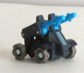
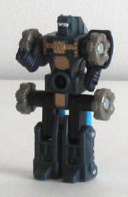
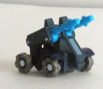
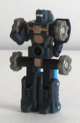
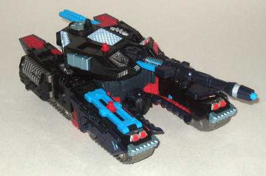
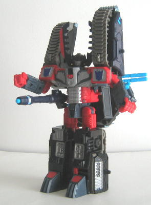

Caliburn
Caliburn
 
Allegiance : Minicon
Size : Mini-Con
Difficulty of Transformation : Very Easy
Color Scheme : Black, bluish gray-black, milky gray, and some gold, white, metallic bluish-silver, and sky blue
Rating : 6.7
(NOTE: Because this is a repaint, this is not a full-blown review. This mainly covers any changes made to the mold and the color scheme, and merely compares it to Armada Megatron w/ Leader-1. For a review on the mold itself, read the review of Armada Megatron w/ Leader-1 here .)
Caliburn


Allegiance
: Minicon
Size
: Mini-Con
Difficulty of Transformation
: Very
Easy
Color Scheme
: Black, bluish gray-black,
milky gray, and some gold, white, metallic bluish-silver, and sky blue
Rating
: 6.7
Caliburn definitely shares
a lot in common with Armada
Galvatron
's
Minicon, Clench. He has the same main color, black, although on Caliburn,
much of it is a weird kind of bluish "light" black. I think a solid black,
like that used on his upper legs and arms, would have worked better for
the whole body. The sky blue cannons also don't look quite right in contrast
with the other colors, although at least none of his other parts besides
the cannons are blue. The gray wheels work great with the rest of the color
scheme, though, as do the gold paint apps on Caliburn's chest and waist.
(Caliburn is a weird name, though. What, is this guy addicted to exercise
or something?) It's also nice to see some paint apps, like the white on
the optics, used only here and nowhere else on either Caliburn or Megazarak.
It just seems to show the care that went into picking the color scheme
for this toy.
No mold changes have
been made to Caliburn.
Caliburn is a rather
nice repaint, but due to his oddly bluish black plastic used for parts
of his body, as well as his sky blue cannons, I'd have to put him a little
below Clench in my book.
 Megazarak
Megazarak


Allegiance
: Decepticon
Size
: Giga-Con (Armada size class)
Difficulty of Transformation
: Medium
Color Scheme
: Black, silver, bluish
gray-black, sparkly dark navy blue, light red, milky gray, and some bright
yellow, sky blue, clear plastic, periwinkle, and metallic bluish-silver
Powerlinx ports
: 14 (3 gimmicked)
Rating
: 9.2
Megazarak has a really
kickin' color scheme, and one that's definitely worthy of a Decepticon
leader. He has your classic evil black-and-red combo, with a few other
colors thrown in to spice things up. He's got plenty of silver, especially
on his chest (the people who chose the colors said they did it as a throwback
to G1 Megatron), and a few varying degrees of black plastic on his body.
He still has that odd bluish black plastic on him. I don't know why that's
been used so much in Transformers lately, since just plain black looks
much better. Still, it's not too bad. I'm not sure I like the sky blue
parts, though- they don't seem to fit in with the rest of Megazarak's color
scheme. It's like they were just thrown in at random, and that's not what
ANY part of an OTFCC exclusive toy should look like. Still, his color scheme,
overall, easily lets one overlook these minor flaws. Megazarak looks like
he could kick some butt and then some.
No mold changes have
been made to Megazarak, although his electronics have been removed. This
is both a positive and a negative; although he doesn't make all those annoying
noises when he transforms, he doesn't make any cool cannon-firing noises,
either. Still, if this is what they had to do to make Megazarak cheaper,
than I'm all for it.
Megazarak is a great
repaint of a great toy- the best colors out of any of the Armada Megatron
schemes. However, for the hefty price he's got going for him, you might
wanna consider the original Armada Megatron if you only want one version
of this toy, since he's almost as good. If you don't mind paying high prices
for great toys, though, then I highly recommend him.
Review by Beastbot